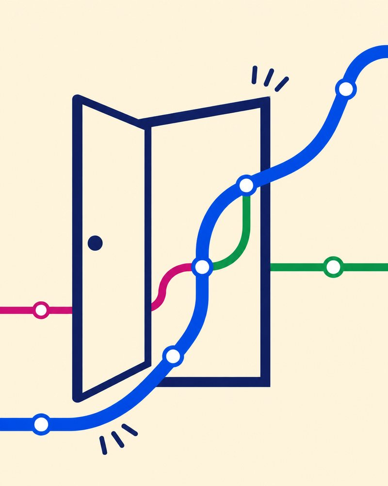
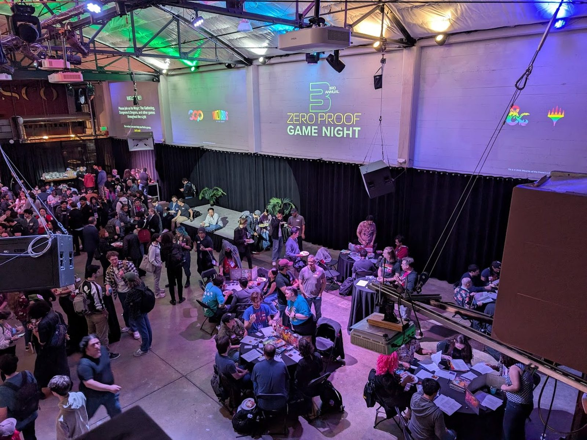
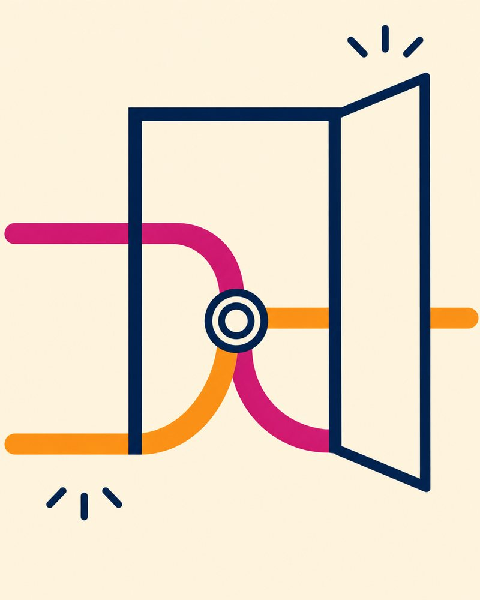
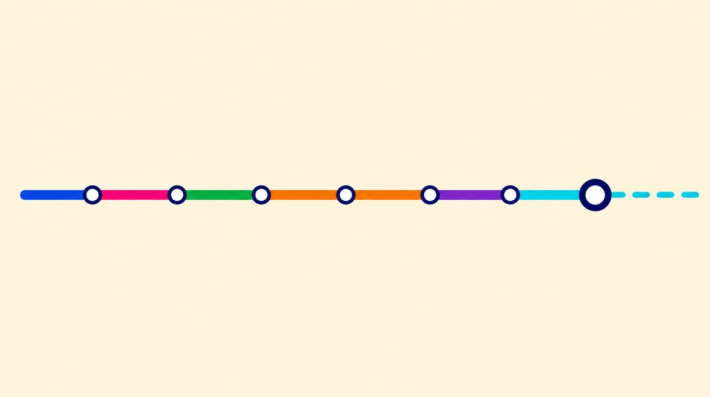

"I'm a student."
Scholars
A grant, a curriculum and a Scholar class that builds together, from your first class to your first credit.
Become a ScholarQueer-led since 2006
Gay Gaming Professionals opens doors in the games industry for LGBTQ+ people and everyone the industry underestimates.
Welcome to Gay Gaming Professionals. We are a queer-led nonprofit, and we have been opening doors in the games industry since 2006. We began by building a home for LGBTQ+ people in games. Today, that leadership lifts up everyone the industry underestimates. Whether you are a student, a working professional, or someone who wants to help, there is a seat for you. We build our own table. Pull up a chair.

Three doors. Pick yours.

"I'm a student."
A grant, a curriculum and a Scholar class that builds together, from your first class to your first credit.
Become a Scholar
"I work in games."
Mentor a Scholar, review a portfolio or open your studio for a tour, and pay it forward to the next generation.
Mentor a Scholar
"I want to help."
Fund Scholars, back the programs that match what you care about and meet Scholars early, on their terms.
Partner or giveDoor illustrations show no real person.
GGP started in 2006 as a home for LGBTQ+ people in games. That home is still here, and the door is wider now.
Queer leadership taught us what it takes to belong in an industry that wasn't built for you. Today we use it to lift up everyone the industry underestimates.
GGP celebrates excellence and serves people across backgrounds: neurodiverse, Latine, BIPOC, disabled, women, LGBTQ+, AANHPI, and growing.
Read our storyGrants and community for undergraduate and graduate creators, through GGP Scholars and CYSTEM Scholars.
Portfolio reviews, studio tours and talks from people who have shipped the games you play.
A way in: a GDC day built for introductions, and people who will vouch for your work.
Backing for founders, indie developers and creators building their own studios and channels.
Excellence
65 Scholars. 41 universities. One Scholar class that builds together.
Two programs. One Scholar class that builds together.
Scholars are known here for what they do: 25 of this year's 65 already teach or mentor, and 18 dream of a studio, company or platform of their own.
Scholars are known here for what they do: the games they make, the clubs they run and the younger students they teach.
Team onlyGGP's 2026-27 selection and the Scholars Transit Map, aggregate counts. Not announced yet. Names and stories appear only with each Scholar's consent.
Meet the ScholarsThen, now, next.

Trust
SourcedFrom GGP's records and public pages, read November 17, 2026. Each partner confirms its listing before launch.
GDC week, game jams and nights that are alcohol-free and open to all ages.
For everyone.
Hang out, ask questions, find your party.
For Scholars and community.
Industry news, jobs and partner updates.
For professionals and partners.
Next gathering: Zero Proof Board Game Night. Monday, March 1, 2027, 5 to 11 pm, The Foundry SF. Alcohol-free, all ages. Then GDC Tuesday on March 2.
“I've been alcohol free for nine years and I can't tell you how much this event means to me.”A guest at Zero Proof Board Game Night, 2026
Get one email a month with Scholar stories, open roles and ways to get involved.